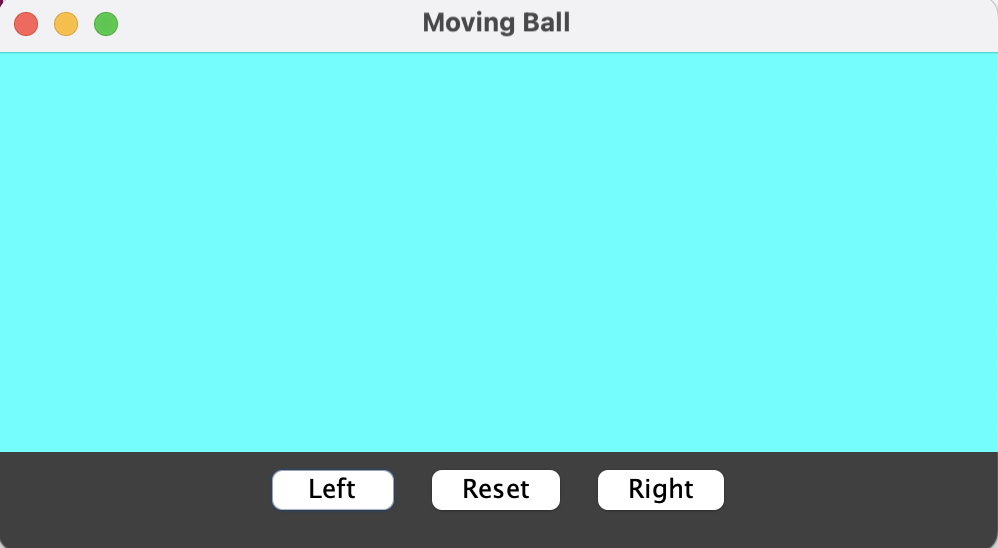

Goal: Build the core mechanics we’ll reuse for the game project:
buttons → movement, timer → animation, key listener → focus.
01. Moving Wall (Line) + Buttons
In this lab, you’ll create a simple GUI application where a vertical line (representing a wall)
can be moved left and right using buttons. You will implement the Model-View-Controller (MVC)
pattern to separate the drawing logic, user interface, and control logic.
0️⃣ Setup — Run the starter
Import the starter project into Eclipse: Game-demo.zip
Run MyApp.

1️⃣ Draw the wall (vertical line)Graphics
Open DrawingComponent.
Add fields for x, y, step (and start_x).
In paintComponent, draw a vertical line from (x,y) down 150 pixels.
// DrawingComponent fields (example)
private int start_x = 250;
private int x = start_x;
private int y = 20;
private int step = 10;
@Override
protected void paintComponent(Graphics g) {
super.paintComponent(g);
Graphics2D g2 = (Graphics2D) g;
g2.setStroke(new BasicStroke(4));
g2.drawLine(x, y, x, y + 150);
}
💡 Why do we keep both start_x and x?
x changes as the wall moves left and right.
start_x remembers the original position so we can
easily reset the wall back to where it started.
2️⃣ Add wall (line) movement methods (Drawing Component)Repaint
Add these methods to DrawingComponent. Each one must call repaint().
Move the vertical line to the right by incrementing x (x+=step)
Move the vertical line to the left by decrementing x (x-=step)
Reset the vertical line to its original position (x=start_x)
Add repaint() at the end of each movement method
public void moveLeft() {
x -= step;
repaint();
}
public void moveRight() {
x += step;
repaint();
}
public void reset() {
x = start_x;
repaint();
}
💡 Hint: What does repaint() actually do?
It schedules a redraw. Swing will call paintComponent again soon.
(You do not call paintComponent directly.)
3️⃣ Check three buttons (MyMenu)
In MyMenu, you have 3 buttons as instance variables: leftButton, resetButton, rightButton.
Add getters for those buttons (so that Controller can later attach listeners). Use source -> Generate getters
public JButton getLeftButton() {
return leftButton;
}
public JButton getRightButton() {
return rightButton;
}
public JButton getResetButton() {
return resetButton;
}
4️⃣ Button Listener (Controller)ActionListener
Create one inner listener class
private class ButtonListener implements ActionListener{
@Override
public void actionPerformed(ActionEvent e) {
}
}
Use e.getActionCommand to apply the logic.
If the button pressed is "Left", call drawing.moveLeft().
If the button pressed is "Right", call drawing.moveRight().
If the button pressed is "Reset", call drawing.reset().
private class ButtonListener implements ActionListener {
@Override
public void actionPerformed(ActionEvent e) {
String buttonLabel = e.getActionCommand();
if (buttonLabel.equals("Left")) {
drawing.moveLeft();
} else if (buttonLabel.equals("Right")) {
drawing.moveRight();
} else {
drawing.reset();
}
}
}
5️⃣ Register buttons (Controller)
Create an instance of Listener and register it with the buttons.
ButtonListener bl = new ButtonListener();
menu.getLeftButton().addActionListener(bl);
menu.getRightButton().addActionListener(bl);
menu.getResetButton().addActionListener(bl);
Checkpoint: Clicking buttons moves the wall and resets it.
02. Ball Animation
Now you’ll add the first “real game object”: a moving ball.
You’ll build a Ball class, animate with
Timer, flip direction, and finally add a key to flip.
We’ll also discover why keys “stop working” after clicking buttons (focus).
6️⃣ The Ball class (red circle)OOP
Add fields for position (x, y) and size (r).
Add a draw(Graphics2D) method that draws a red circle.
public class Ball {
private int x, y, radius;
private int dx = 4; // direction + speed, 4 pixels per move
private int dy = 0; // direction + speed
public Ball(int x, int y, int radius) {
this.x = x;
this.y = y;
this.radius = radius;
}
public void draw(Graphics2D g2) {
g2.setColor(Color.RED);
g2.fillOval(x, y, 2*radius, 2*radius);
}
}
7️⃣ Add the ball to DrawingComponentComposition
Add a Ball field to DrawingComponent.
In paintComponent, call ball.draw(g2).
// in DrawingComponent
private Ball ball = new Ball(80,100,14);
// in paintComponent (after drawing the wall)
ball.draw(g2);
8️⃣ Make the ball move using a TimerAnimation
Now we add a game loop: timer tick → update → repaint.
Add a move() method to Ball.
Create a Timer in DrawingComponent that calls ball.move() and repaint().
// in Ball class
public void move() {
x += dx;
}
// in DrawingComponent constructor
// in the field:
private Timer timer;
//in constructor:
timer = new Timer(50, e -> {
ball.move();
repaint();
});
timer.start();
💡 Hint: Why does the ball keep moving without extra clicks?
Because the Timer triggers repeatedly (every 50ms here). That’s the “game heartbeat.”
💡 About Timer (important)
This is a Swing Timer:
javax.swing.Timer
(not java.util.Timer).
A Swing Timer runs on the Event Dispatch Thread,
which makes it safe to update Swing components and call
repaint().
This is the same thread you used earlier with
SwingUtilities.invokeLater(...) in MyApp.
If you accidentally import java.util.Timer,
your code will compile but behave incorrectly or crash.
What does timer.start() do?
start() begins the timer’s loop.
Every 50 milliseconds, the lambda runs:
ball.move();
repaint();
Without start(), the timer exists but never fires.
Why don’t we call timer.stop()?
In this lab, we want the ball to move continuously for the entire time
the program is running.
We will use timer.stop() later when we add:
Pause / Resume
Game Over or Win screens
Level switching
Why is the Timer created in the constructor?
The constructor sets up how the object behaves.
Creating and starting the Timer here means:
The animation starts automatically when the panel exists
No extra method calls are needed from outside the class
The panel is self-contained (good design)
The Controller does not need to know how animation works,
it just uses the drawing panel.
9️⃣ Flip direction (ball.flip)State
Add a method to reverse the ball direction.
// in Ball
public void flip() {
dx = -dx;
}
Note: You will need to trigger flip() from a new button or a key (our next step).
🔟 Add a KeyListener (Drawing Component)Input
Add a key that flips the ball. Use a letter key like T.
// in DrawingComponent constructor
setFocusable(true);
addKeyListener(new KeyAdapter() {
@Override
public void keyPressed(KeyEvent e) {
if (e.getKeyCode() == KeyEvent.VK_T) {
ball.flip();
}
}
});
Why KeyAdapter? What is KeyListener? What is a key code?
KeyListener is an interface with three methods:
keyPressed(...)
keyReleased(...)
keyTyped(...)
If you implement KeyListener directly, Java forces you to write
all three methods, even if you only care about one.
KeyAdapter is a convenience class that already
implements KeyListener for you with empty methods.
You override only what you need.
addKeyListener(new KeyAdapter() {
@Override
public void keyPressed(KeyEvent e) {
// only the method we care about
}
});
What is e.getKeyCode()?
A key code is a constant that represents a physical key on
the keyboard.
Examples:
KeyEvent.VK_T — the T key
KeyEvent.VK_LEFT — left arrow
KeyEvent.VK_ENTER — Enter (often conflicts with buttons)
Using key codes is more reliable than checking characters,
especially for non-letter keys.
Why not use keyTyped()?
keyTyped() is for character input (text fields).
Games and controls usually respond to physical keys,
so we use keyPressed() instead.
Hint: What does “focus” mean?
Keyboard events only go to the component that currently has focus.
Clicking a button gives focus to that button ("button steals the focus").
Fix focus (requestFocusInWindow)Swing
We want the drawing area to regain focus after UI interactions.
In Controller, at the end of Button Listener (after each button action), call drawing.requestFocusInWindow().
Also request focus once when the UI first appears (inside Controller).
// After handling a button logic in Controller:
drawing.requestFocusInWindow();